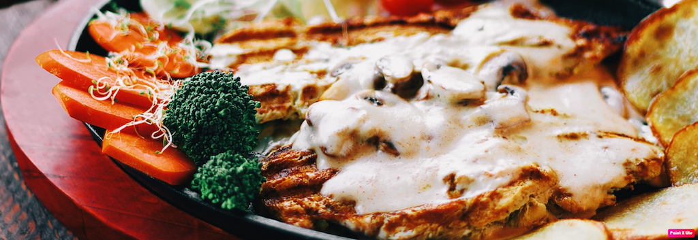
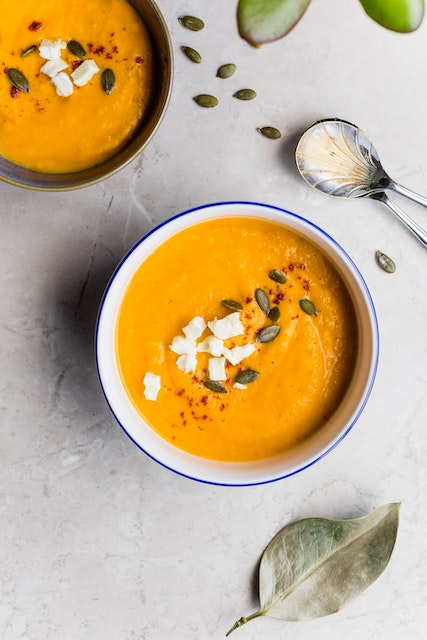

For many people, eating healthy is a chore. When the world is filled with glorious
pastas, the cheesiest of pizzas, and layers of cake, why in the world would we ever
bother eating a salad? Well, fellow gluttons, it's because not only is it a good idea
for us to eat a vegetable every now in then, but also eating healthy is actually
delicious -- no lie.
If you don't know where to begin when it comes to making healthy food choices -
- or if you are already following a healthy, wholesome diet but need some new
recipe ideas -- we have gathered together our 10 favorite blogs to turn to for
fresh, seasonal, whole-grain cooking (and baking). These bloggers will make you
forget all about the allure of double stuffed Oreos and kettle chips. Or at the very
least, they'll make eating salads feel like a treat.

Eating a healthy, balanced diet is one of the most important things you can
do to protect your health. In fact, up to 80% of premature heart disease and
stroke can be prevented through your life choices and habits, such as
eating a healthy diet and being physically active.